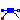
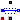
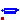

Loss models for induction machines
Extends from Modelica.Icons.VariantsPackage (Icon for package containing variants).
| Name | Description |
|---|---|
|  Brush | Model considering voltage drop of carbon brushes |
|  StrayLoad | Model of stray load losses dependent on current and speed |
| PermanentMagnetLosses | Model of permanent magnet losses dependent on current and speed |
|  Core | Model of core losses |
Model considering voltage drop of carbon brushes
Model of voltage drop and losses of carbon brushes. This three-phase model uses three DC Brush loss models.
Extends from Modelica.Electrical.MultiPhase.Interfaces.TwoPlug (Component with one m-phase electric port), Modelica.Thermal.HeatTransfer.Interfaces.PartialConditionalHeatPort (Partial model to include a conditional HeatPort in order to dissipate losses, used for graphical modeling, i.e., for building models by drag-and-drop).
| Name | Description |
|---|---|
| m | Number of phases |
| brushParameters | Brush loss parameters |
| useHeatPort | =true, if HeatPort is enabled |
| T | Fixed device temperature if useHeatPort = false [K] |
| Name | Description |
|---|---|
| plug_p | |
| plug_n | |
| heatPort | Optional port to which dissipated losses are transported in form of heat |
Model of stray load losses dependent on current and speed
Stray load losses are modeled similar to standards EN 60034-2 and IEEE 112, i.e., they are dependent on square of current, but without scaling them to zero at no-load current.
For an estimation of dependency on varying angular velocity see:
W. Lang, Über die Bemessung verlustarmer Asynchronmotoren mit Käfigläufer für Pulsumrichterspeisung,
Doctoral Thesis, Technical University of Vienna, 1984.
The stray load losses are modeled such way that they do not cause a voltage drop in the electric circuit. Instead, the dissipated losses are considered through an equivalent braking torque at the shaft.
The stray load loss torque is
tau = PRef/wRef * (i/IRef)^2 * (w/wRef)^power_w
where i is the current of the machine and w is the actual angular velocity.
The dependency of the stray load torque on the angular velocity is modeled by the exponent power_w.
If it is desired to neglect stray load losses, set strayLoadParameters.PRef = 0 (this is the default).
Extends from Modelica.Electrical.MultiPhase.Interfaces.OnePort (Component with two electrical plugs and currents from plug_p to plug_n), Machines.Interfaces.FlangeSupport (Shaft and support), Modelica.Thermal.HeatTransfer.Interfaces.PartialElementaryConditionalHeatPortWithoutT (Partial model to include a conditional HeatPort in order to dissipate losses, used for textual modeling, i.e., for elementary models).
| Name | Description |
|---|---|
| m | Number of phases |
| strayLoadParameters | Stray load loss parameters |
| useHeatPort | =true, if heatPort is enabled |
| Name | Description |
|---|---|
| plug_p | |
| plug_n | |
| flange | Shaft end |
| support | Housing and support |
| heatPort | Optional port to which dissipated losses are transported in form of heat |
Model of permanent magnet losses dependent on current and speed
Permanent magnet losses are modeled dependent on current and speed.
The permanent magnet losses are modeled such way that they do not cause a voltage drop in the electric circuit. Instead, the dissipated losses are considered through an equivalent braking torque at the shaft.
The permanent magnet loss torque is
tau = PRef/wRef * (c + (1 - c) * (i/IRef)^power_I) * (w/wRef)^power_w
where i is the current of the machine and w is the actual angular velocity.
The parameter c designates the part of the permanent magnet losses that are present even at current = 0, i.e. independent of current.
The dependency of the permanent magnet loss torque on the stator current is modeled by the exponent power_I.
The dependency of the permanent magnet loss torque on the angular velocity is modeled by the exponent power_w.
Permanent magnet loss parameters
If it is desired to neglect permanent magnet losses, set strayLoadParameters.PRef = 0 (this is the default).
Extends from Machines.Interfaces.FlangeSupport (Shaft and support), Modelica.Thermal.HeatTransfer.Interfaces.PartialElementaryConditionalHeatPortWithoutT (Partial model to include a conditional HeatPort in order to dissipate losses, used for textual modeling, i.e., for elementary models).
| Name | Description |
|---|---|
| m | Number of phases |
| permanentMagnetLossParameters | Permanent magnet loss parameters |
| useHeatPort | =true, if heatPort is enabled |
| Name | Description |
|---|---|
| flange | Shaft end |
| support | Housing and support |
| heatPort | Optional port to which dissipated losses are transported in form of heat |
Model of core losses
Core losses can be separated into eddy current and hysteresis losses. The total core losses can thus be expressed as
P = PRef * (ratioHysteresis * (wRef / w) + 1 - ratioHysteresis) * (V / VRef)^2
where w is the actual angular remagnetization velocity and V is the actual voltage.
The term ratioHysteresis is the ratio of the hysteresis losses with respect to the total core losses for the reference voltage and frequency.
In the current implementation hysteresis losses are not considered since complex numbers are not provided in Modelica.
Therefore, implicitly ratioHysteresis = 0 is set. For the voltage and frequency range with respect to Fig. 1,
the dependency of total core losses on the parameter ratioHysteresis is depicted in Fig. 2.
The current implementation has thus the drawback over a model that considers ratioHysteresis > 0:
w < wRef)w > wRef)| |
| Fig. 1: Voltage versus angular velocity |
 |
Fig. 2: Core losses versus angular velocity with parameter ratioHysteresis |
In the current implementation it is assumed that ratioHysteresis = 0. This parameter cannot be changed due to compatibility reasons.
Extends from Modelica.Thermal.HeatTransfer.Interfaces.PartialElementaryConditionalHeatPortWithoutT (Partial model to include a conditional HeatPort in order to dissipate losses, used for textual modeling, i.e., for elementary models).
| Name | Description |
|---|---|
| coreParameters | |
| turnsRatio | Effective number of stator turns / effective number of rotor turns (if used as rotor core) |
| useHeatPort | =true, if heatPort is enabled |
| Losses | |
| w | Remagnetization angular velocity [rad/s] |
| Name | Description |
|---|---|
| heatPort | Optional port to which dissipated losses are transported in form of heat |
| spacePhasor |